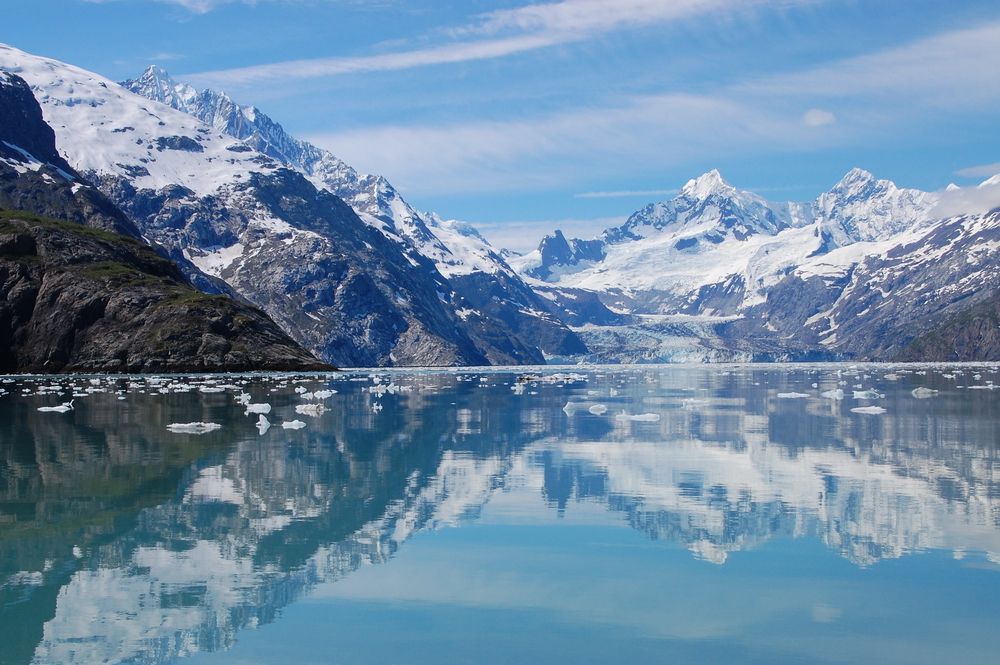

If i go to Alaska, i will take a Railroad or fly to Fairbanks to look at The Northern Lights. At 65 degrees north latitude, the sky takes on a capricious life of its own—a canvas for the aurora borealis, the midnight sun and sunsets and sunrises that last forever. Here there are serious mountain ranges, pristine rivers and lakes, abundant wildlife and a certain poignant solitude that is found nowhere else on earth. Locals embrace the natural world and have created a vibrant river city in the far north. Where else can you travel to such a remote locale and still enjoy all the amenities of a charming downtown, a thriving arts community, rich Alaska Native culture, authentic Alaskan activities and attractions and endless opportunities for exploration?
